Composite
the lecture of this week is about composite material
we have to make experimentation whit resin and fibre to make strength item by combining this 2 component.
taking inspiration from marvel hero I try to build a Capitan America's shield.
i take a 3d model of the shield and fixed the geometry in blender: I delete the mesh inside to make a "single volume" solid.
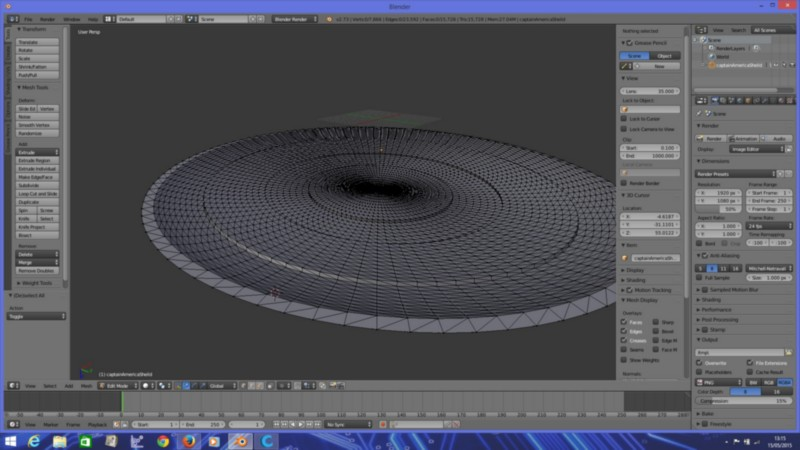
 after that I make a boolean subtraction to make the negative mold file for the cnc machine.
i use a foam piece about 60x60x6 cm and i engrave the 3d shape in it.
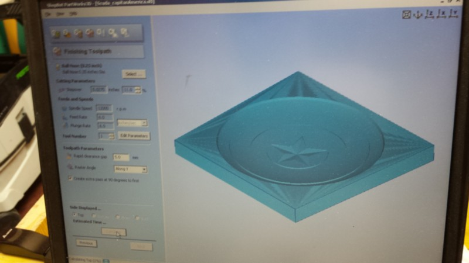
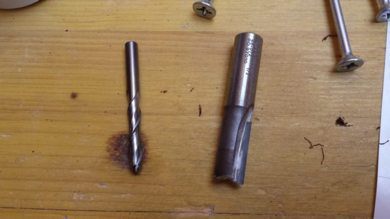
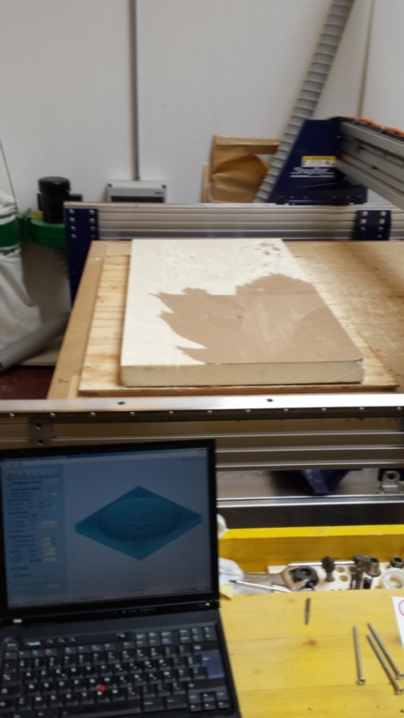
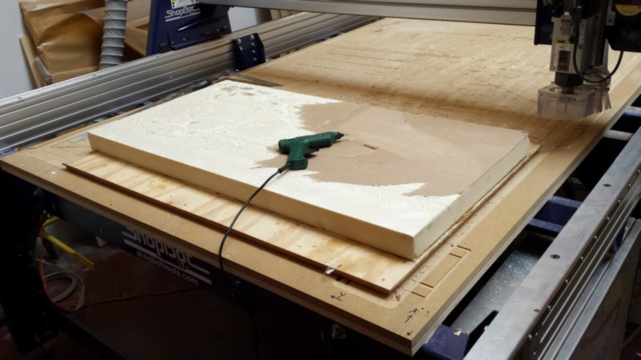
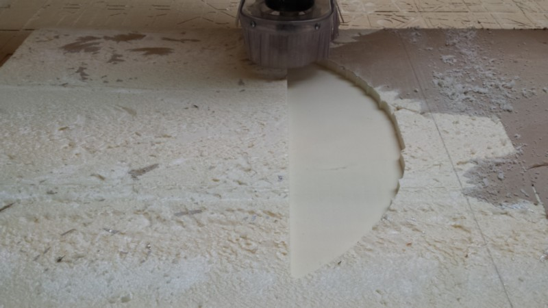
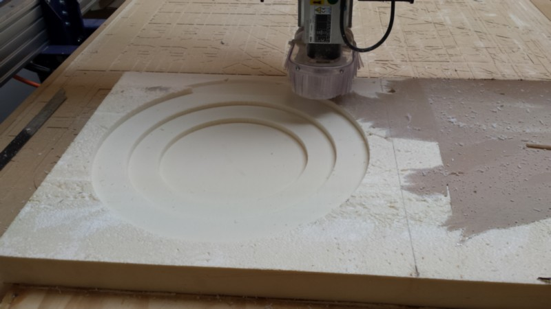
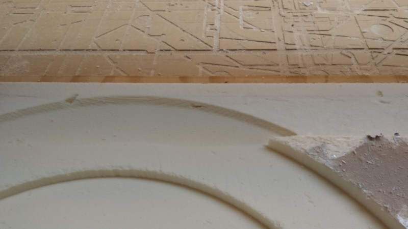
meanwhile the cnc mill was working i decide to make the shield full colour by putting some coloured tissue on it.
for this reason i buy red, blue and whit tissue and try to laser it.
I make a projection of the shield on 2d plane in rhino to make the dimension of the round and the star ready to be lasercutt, I offset a little bit the outer border to have a nice overlap of the 2 fabric.
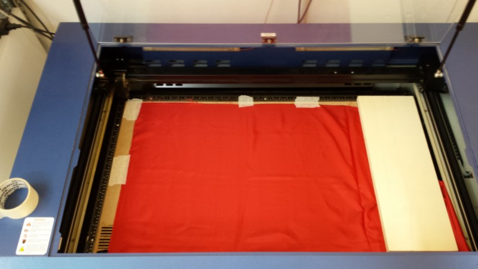
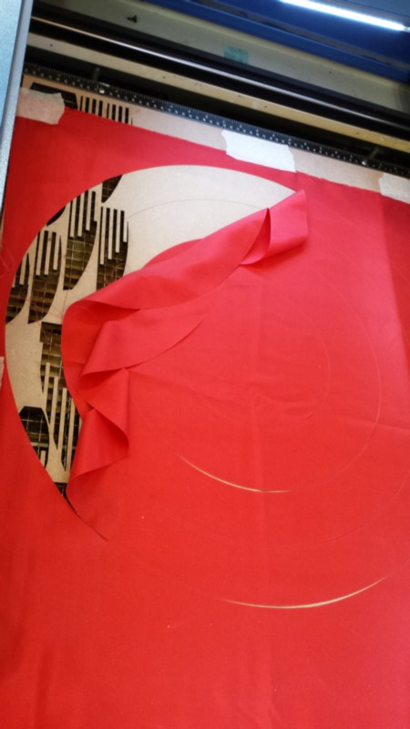
now come the difficoult part,as i decide to make the negative side for have a nice superficial definition, there is the bad side that is that now i have to find a solution to make the resin coat well all the part and do not stick to the foam.
For this reason i try to make the foam harder and a little bit minus porous by adding some layer of vinyl glue and water and let them dry
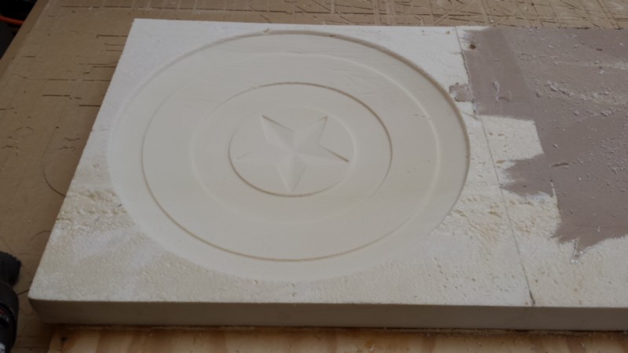
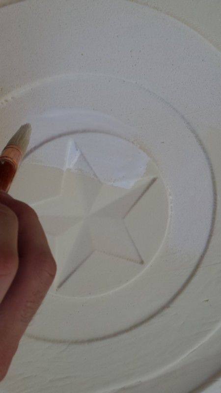
after that i try to coat the foam whit a food plastic film using some other glue.
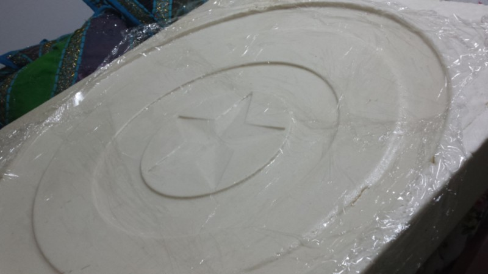
More to come
Download the RAR file of the project (shield, mold and laser cut fabbric pattern)
after that I make a boolean subtraction to make the negative mold file for the cnc machine.
i use a foam piece about 60x60x6 cm and i engrave the 3d shape in it.
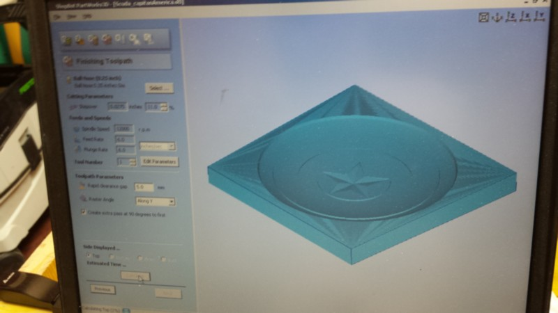
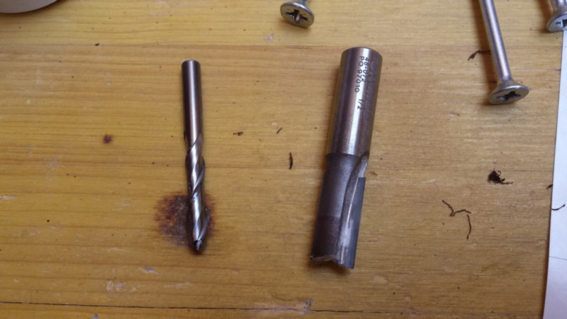
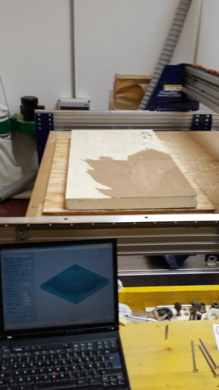
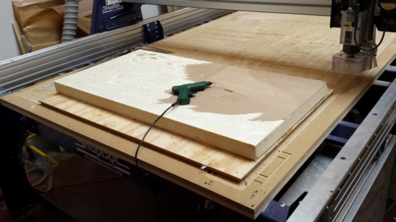
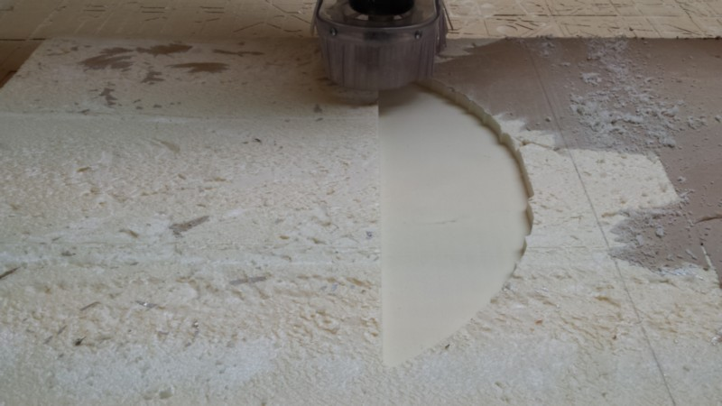
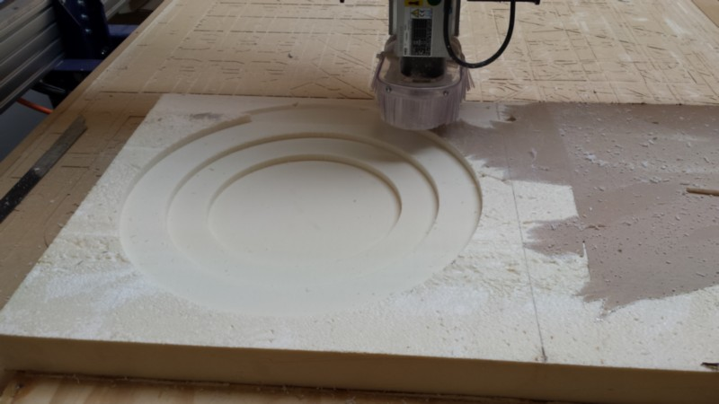
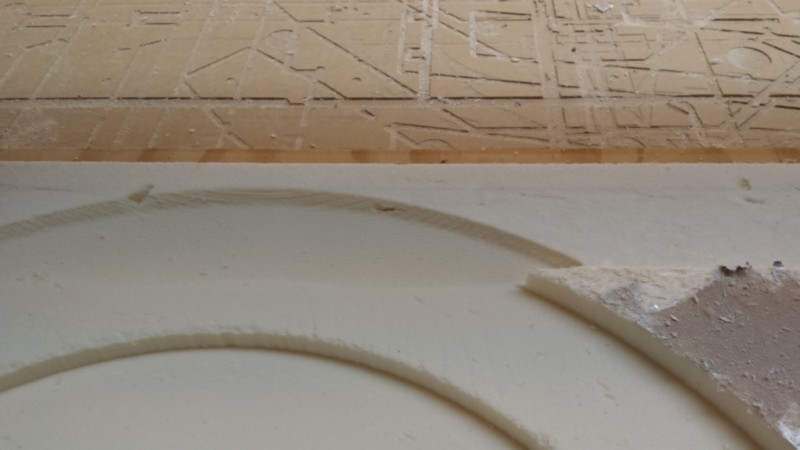
meanwhile the cnc mill was working i decide to make the shield full colour by putting some coloured tissue on it.
for this reason i buy red, blue and whit tissue and try to laser it.
I make a projection of the shield on 2d plane in rhino to make the dimension of the round and the star ready to be lasercutt, I offset a little bit the outer border to have a nice overlap of the 2 fabric.
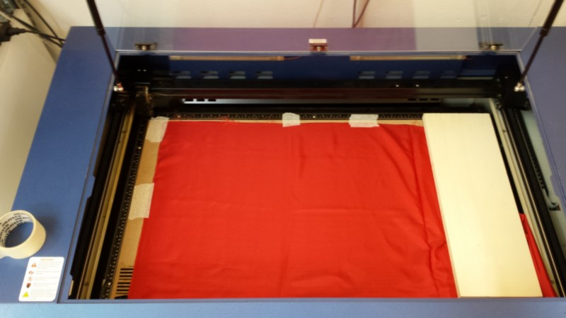
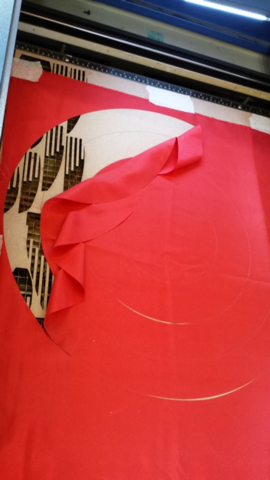
now come the difficoult part,as i decide to make the negative side for have a nice superficial definition, there is the bad side that is that now i have to find a solution to make the resin coat well all the part and do not stick to the foam.
For this reason i try to make the foam harder and a little bit minus porous by adding some layer of vinyl glue and water and let them dry
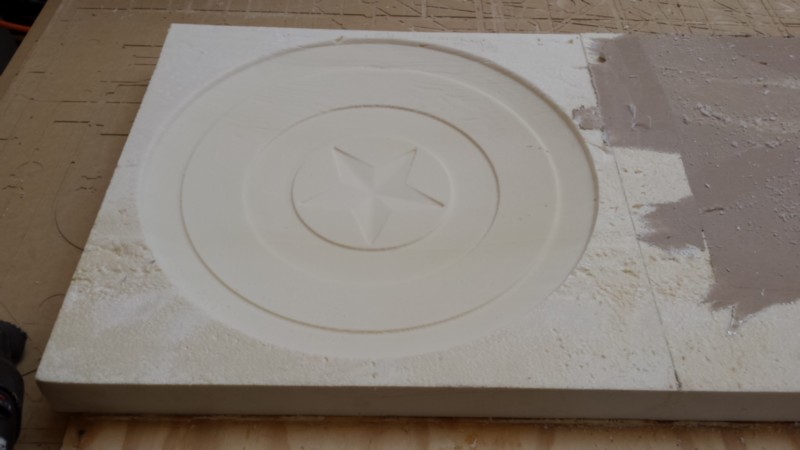
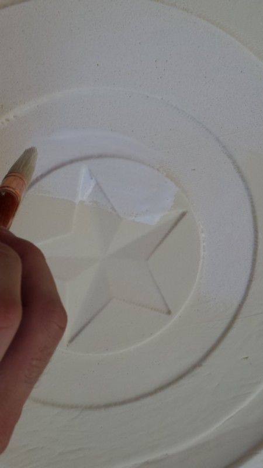
after that i try to coat the foam whit a food plastic film using some other glue.
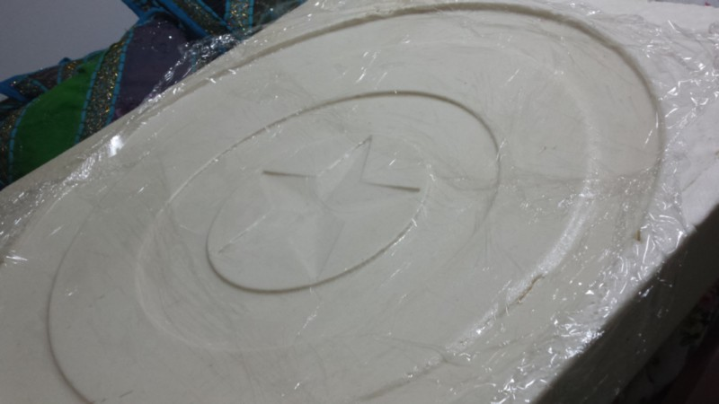
More to come
Download the RAR file of the project (shield, mold and laser cut fabbric pattern)